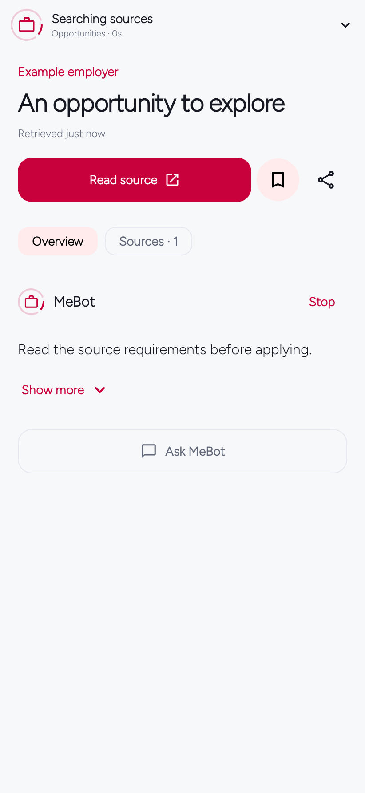
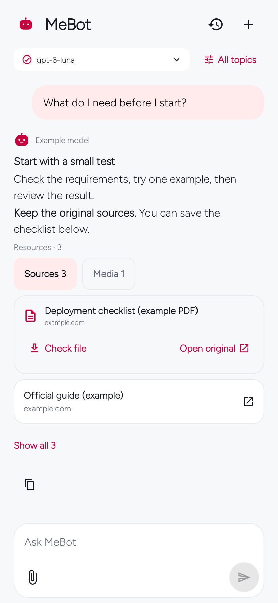

MeBot 0.8.1 · Guide
Activity, refresh and useful files
See what MeBot is doing without losing the information you are reading.
One fixed activity panel
The top panel stays in place while you scroll. Its ring appears only during an active request. Tap it to see the operation history; tap Show less or outside the popover to close it.
Labels reflect actual work: preparing, connecting, searching, reading, checking results or preparing updates. Writing an answer is used for conversations, not feed discovery. Elapsed time is not a promise of time remaining.
Provider-published summaries may appear when supplied. MeBot does not show private internal reasoning or invent listing counts.
Keep reading while work continues
Original item information stays visible. Use Show more for notes and next steps. Ask MeBot continues with this item and its allowed context. Running badges elsewhere belong only to their own requests.


Refresh the topic you selected
Select a module, then pull down. The refresh button and tapping Feed again use the same selected module. Feed reselection also returns to the top. Explicit refresh invalidates the relevant public-source cache; overlapping requests are combined.
Sources sometimes have nothing new. MeBot does not invent items to make a refresh look different.
Local information, with your choices first
Tanzania-focused defaults apply when selected, or when no region is selected and the saved timezone is Africa/Dar_es_Salaam. A different chosen region wins. This does not infer nationality, precise location or job eligibility.
Default local news uses Daily News and BBC Swahili, with business coverage from Daily News. Public sources work without an AI account; they retain the publisher’s language when translation is unavailable. Custom source lists are preserved.
Check before saving
A PDF-looking link is not enough. MeBot checks public availability, redirects, size, content type and a small file prefix before showing verified file counts and Save file.
If a check fails, Open original remains. Check file retries. Saving rechecks the complete file and opens Android’s save picker. Downloads are limited to 20 MiB; authenticated content is not bypassed. File checks have separate capacity and do not block the answer.


English and Kiswahili
Activity labels follow the app language. Generated information follows the module or app language. Public publisher content is not falsely labelled as translated.